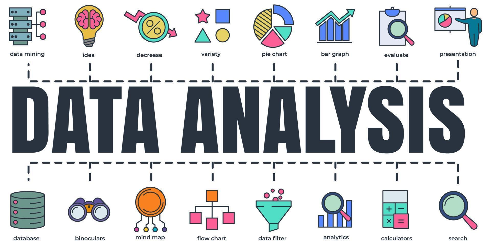

CCT 1114 • DATA ANALYTICS
Turning Data into
Meaningful Insights
Discover how data can be collected, analysed and transformed into meaningful insights to support better decisions.

CCT 1114 • DATA ANALYTICS
Discover how data can be collected, analysed and transformed into meaningful insights to support better decisions.

Data Analytics is the process of collecting, organising, analysing and interpreting data to discover useful information. It helps individuals and organisations identify patterns, understand trends and make better decisions.
Data Analytics helps people and organisations understand information, identify trends and make informed decisions based on data.
Learn how data can be collected, organised and prepared for analysis.
Identify patterns and trends in data to gain useful and meaningful insights.
Use data-driven insights to support better decisions in different situations.
Data Analytics follows a series of steps to transform raw data into useful insights and informed decisions.
Gather relevant data from different sources.
Remove errors and organise the data.
Examine data to identify patterns and trends.
Turn findings into meaningful insights.
Use insights to support better decisions.